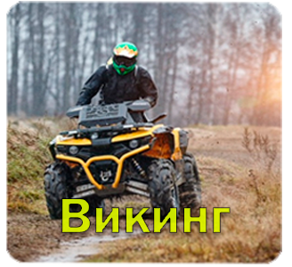

Викинг

349.000 рублей
Квадроцикл Викинг - это мощное и универсальное средство передвижения,
спроектированное для активных приключений на природе.
Этот четырёхколесный транспортный средство сочетает в себе надежность
и проходимость, делая его отличным выбором для различных задач.
Основные характеристики Квадроцикла Викинг:
Мощный двигатель: Квадроцикл Викинг оборудован мощным двигателем,
который обеспечивает отличную производительность как на пересеченной местности,
так и на асфальте.
Превосходная устойчивость: Благодаря четырем колесам и низкому центру тяжести,
квадроцикл Викинг обладает высокой устойчивостью, что делает
его подходящим для различных условий дорог и местности.
Проходимость: Этот квадроцикл спроектирован для преодоления
сложных препятствий на природе, включая грязь, песок, снег и камни.
Он способен преодолевать невероятно разнообразные местности.
Удобство и комфорт: Викинг оснащен удобным сиденьем и современной подвеской,
что обеспечивает комфортное вождение как для водителя, так и для пассажиров.
Многофункциональность: Квадроцикл Викинг может использоваться для различных
целей, включая активный отдых, охоту, рыбалку и фермерскую работу.
Продуманный дизайн: Отличительной чертой Викинга является стильный дизайн,
который сочетает в себе современные элементы и практичность.
С Квадроциклом Викинг вы готовы к захватывающим приключениям
вне зависимости от местности или погодных условий.